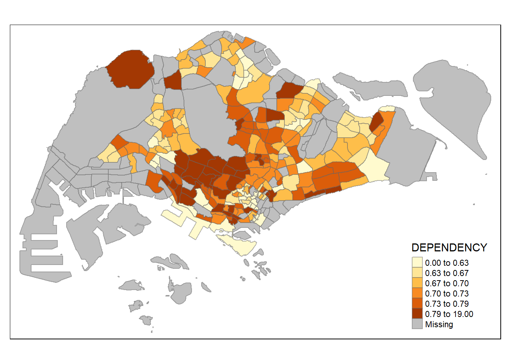
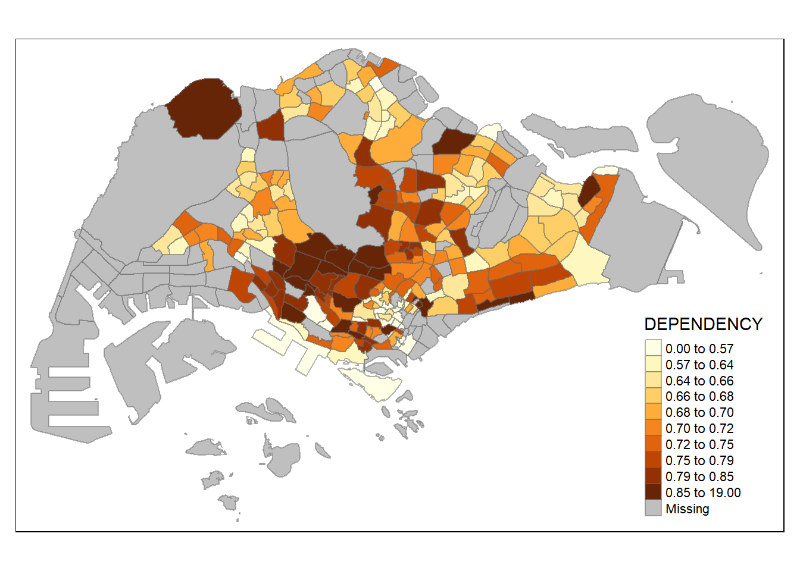
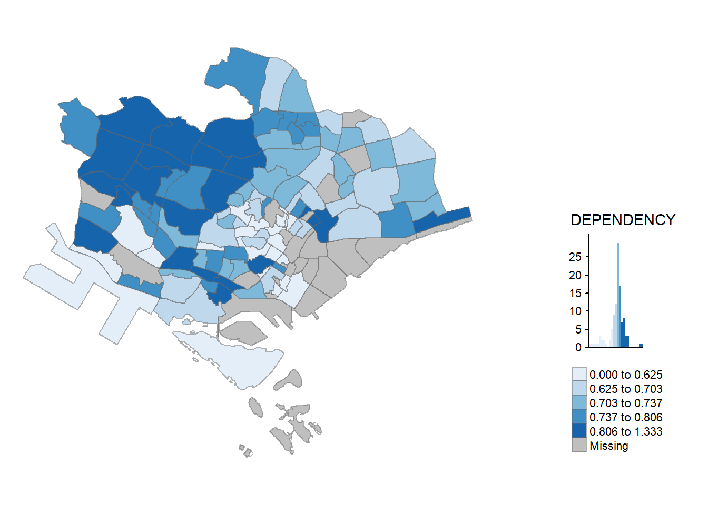

pacman::p_load(tidyverse, sf, tmap, stringr)Hands-on Exercise - Choropleth Mapping with R
Session 3
1 Getting Started
1.1 Installing and Loading R Packages
In this section, I will install and load the required R packages, tidyverse, sf, and tmap packages. Here we use the pacman library to install and load the packages at once.
2 Importing Data into R
2.1 Importing Geospatial Data
mpsz <- st_read(dsn = "data/geospatial",
layer = "MP14_SUBZONE_WEB_PL")Reading layer `MP14_SUBZONE_WEB_PL' from data source
`C:\p-haas\IS415\Hands-on_Ex\Hands-on_Ex03\data\geospatial'
using driver `ESRI Shapefile'
Simple feature collection with 323 features and 15 fields
Geometry type: MULTIPOLYGON
Dimension: XY
Bounding box: xmin: 2667.538 ymin: 15748.72 xmax: 56396.44 ymax: 50256.33
Projected CRS: SVY212.2 Importing Attribute Data into R
popdata <- read_csv("data/aspatial/respopagesextod2011to2020.csv") %>%
filter(Time==2020)3 Data Preparation
In this section, we will start off by preparing a data table with year 2020 values. The data table will include the variables PA, SZ, YOUNG, ECONOMY ACTIVE, AGED, TOTAL, DEPENDENCY. Please find below a description of the mentioned variables:
YOUNG: age group 0 to 4 until age group 20 to 24
ECONOMY ACTIVE: age group 25-29 until age group 60-64
AGED: age group 65 and above
TOTAL: all age group
DEPENDENCY: the ratio between young and aged against economy active group
3.1 Data Wrangling
popdata2020 <- popdata %>%
group_by(PA, SZ, AG) %>%
summarise(`POP` = sum(`Pop`)) %>%
ungroup()%>%
pivot_wider(names_from=AG,
values_from=POP) %>%
mutate(YOUNG = rowSums(.[3:6])
+rowSums(.[12])) %>%
mutate(`ECONOMY ACTIVE` = rowSums(.[7:11])+
rowSums(.[13:15]))%>%
mutate(`AGED`=rowSums(.[16:21])) %>%
mutate(`TOTAL`=rowSums(.[3:21])) %>%
mutate(`DEPENDENCY` = (`YOUNG` + `AGED`)
/`ECONOMY ACTIVE`) %>%
select(`PA`, `SZ`, `YOUNG`,
`ECONOMY ACTIVE`, `AGED`,
`TOTAL`, `DEPENDENCY`)3.2 Joining the Geospatial and Attribute Data
popdata2020 <- popdata2020 %>%
mutate_at(.vars = vars(PA, SZ),
.funs = funs(toupper)) %>%
filter(`ECONOMY ACTIVE` > 0)mpsz_pop2020 <- left_join(mpsz, popdata2020,
by = c("SUBZONE_N" = "SZ"))write_rds(mpsz_pop2020, "data/rds/mpszpop2020.rds")4 Choropleth Mapping for Geospatial Data using tmap
4.1 Quickly plot a choropleth map with qtm() function
tmap_mode("plot")
qtm(mpsz_pop2020,
fill = "DEPENDENCY")
4.2 Creating a choropleth map using tmap’s elements
tm_shape(mpsz_pop2020)+
tm_fill("DEPENDENCY",
style = "quantile",
palette = "Blues",
title = "Dependency ratio") +
tm_layout(main.title = "Distribution of Dependency Ratio by planning subzone",
main.title.position = "center",
main.title.size = 1.2,
legend.height = 0.45,
legend.width = 0.35,
frame = TRUE) +
tm_borders(alpha = 0.5) +
tm_compass(type="8star", size = 2) +
tm_scale_bar() +
tm_grid(alpha =0.2) +
tm_credits("Source: Planning Sub-zone boundary from Urban Redevelopment Authorithy (URA)\n and Population data from Department of Statistics DOS",
position = c("left", "bottom"))
4.2.1 Drawing a base map
tm_shape(mpsz_pop2020) +
tm_polygons()
4.2.2 Drawing a choropleth map using tm_polygons()
tm_shape(mpsz_pop2020) +
tm_polygons("DEPENDENCY")
4.2.3 Drawing a choropleth map using tm_fill() and tm_border()
tm_shape(mpsz_pop2020) +
tm_fill("DEPENDENCY")
tm_shape(mpsz_pop2020) +
tm_fill("DEPENDENCY") +
tm_borders(lwd = 0.1, alpha = 1)
N.B. Some important things to note about the tm_fill() function:
The alpha argument is used to define transparency number between 0 (totally transparent) and 1 (not transparent). By default, the alpha value of the col is used (normally 1).
Beside alpha argument, there are three other arguments for tm_borders(), they are:
col = border colour,
lwd = border line width. The default is 1, and
lty = border line type. The default is “solid”.
4.3 Data classification methods of tmap
4.3.1 Plotting choropleth maps using built-in classification methods
The code chunk below shows a quantile data classification that used 5 classes. In order words, we specify using the jenks method with 5 classes.
tm_shape(mpsz_pop2020)+
tm_fill("DEPENDENCY",
n = 5,
style = "jenks") +
tm_borders(alpha = 0.5)
In the code chunk below, equal data classification method is used.
tm_shape(mpsz_pop2020)+
tm_fill("DEPENDENCY",
n = 5,
style = "equal") +
tm_borders(alpha = 0.5)
4.3.1.1 DIY - Test new classification methods
In this section, I tested two classification methods, namely quantile and sd.
Show the code
tm_shape(mpsz_pop2020)+
tm_fill("DEPENDENCY",
n = 2,
style = "quantile") +
tm_borders(alpha = 0.5)
tm_shape(mpsz_pop2020)+
tm_fill("DEPENDENCY",
n = 6,
style = "quantile") +
tm_borders(alpha = 0.5)
tm_shape(mpsz_pop2020)+
tm_fill("DEPENDENCY",
n = 10,
style = "quantile") +
tm_borders(alpha = 0.5)
tm_shape(mpsz_pop2020)+
tm_fill("DEPENDENCY",
n = 20,
style = "quantile") +
tm_borders(alpha = 0.5)



Show the code
tm_shape(mpsz_pop2020)+
tm_fill("DEPENDENCY",
n = 2,
style = "sd") +
tm_borders(alpha = 0.5)
tm_shape(mpsz_pop2020)+
tm_fill("DEPENDENCY",
n = 6,
style = "sd") +
tm_borders(alpha = 0.5)
tm_shape(mpsz_pop2020)+
tm_fill("DEPENDENCY",
n = 10,
style = "sd") +
tm_borders(alpha = 0.5)
tm_shape(mpsz_pop2020)+
tm_fill("DEPENDENCY",
n = 20,
style = "sd") +
tm_borders(alpha = 0.5)
4.3.2 Plotting choropleth maps with custom break
summary(mpsz_pop2020$DEPENDENCY) Min. 1st Qu. Median Mean 3rd Qu. Max. NA's
0.0000 0.6519 0.7025 0.7742 0.7645 19.0000 92 tm_shape(mpsz_pop2020)+
tm_fill("DEPENDENCY",
breaks = c(0, 0.60, 0.70, 0.80, 0.90, 1.00)) +
tm_borders(alpha = 0.5)
4.4 Colour Scheme
4.4.1 Using ColourBrewer palette
tm_shape(mpsz_pop2020)+
tm_fill("DEPENDENCY",
n = 6,
style = "quantile",
palette = "Blues") +
tm_borders(alpha = 0.5)
tm_shape(mpsz_pop2020)+
tm_fill("DEPENDENCY",
style = "quantile",
palette = "-Greens") +
tm_borders(alpha = 0.5)
4.5 Map Layouts
4.5.1 Map Legend
tm_shape(mpsz_pop2020)+
tm_fill("DEPENDENCY",
style = "jenks",
palette = "Blues",
legend.hist = TRUE,
legend.is.portrait = TRUE,
legend.hist.z = 0.1) +
tm_layout(main.title = "Distribution of Dependency Ratio by planning subzone \n(Jenks classification)",
main.title.position = "center",
main.title.size = 1,
legend.height = 0.45,
legend.width = 0.35,
legend.outside = FALSE,
legend.position = c("right", "bottom"),
frame = FALSE) +
tm_borders(alpha = 0.5)
4.5.2 Map Style
tm_shape(mpsz_pop2020)+
tm_fill("DEPENDENCY",
style = "quantile",
palette = "-Greens") +
tm_borders(alpha = 0.5) +
tmap_style("classic")
4.5.3 Cartographic Furniture
tm_shape(mpsz_pop2020)+
tm_fill("DEPENDENCY",
style = "quantile",
palette = "Blues",
title = "No. of persons") +
tm_layout(main.title = "Distribution of Dependency Ratio \nby planning subzone",
main.title.position = "center",
main.title.size = 1.2,
legend.height = 0.45,
legend.width = 0.35,
frame = TRUE) +
tm_borders(alpha = 0.5) +
tm_compass(type="8star", size = 2) +
tm_scale_bar(width = 0.15) +
tm_grid(lwd = 0.1, alpha = 0.2) +
tm_credits("Source: Planning Sub-zone boundary from Urban Redevelopment Authorithy (URA)\n and Population data from Department of Statistics DOS",
position = c("left", "bottom"))
To reset the default style, refer to the code chunk below.
tmap_style("white")4.6 Drawing Small Multiple Choropleth Maps
4.6.1 By assigning multiple values to at least one of the aesthetic arguments
tm_shape(mpsz_pop2020)+
tm_fill(c("YOUNG", "AGED"),
style = "equal",
palette = "Blues") +
tm_layout(legend.position = c("right", "bottom")) +
tm_borders(alpha = 0.5) +
tmap_style("white")
4.6.2 By defining a group-by variable in tm_facets()
tm_shape(mpsz_pop2020) +
tm_fill("DEPENDENCY",
style = "quantile",
palette = "Blues",
thres.poly = 0) +
tm_facets(by="REGION_N",
free.coords=TRUE,
drop.shapes=TRUE) +
tm_layout(legend.show = FALSE,
title.position = c("center", "center"),
title.size = 20) +
tm_borders(alpha = 0.5)
4.6.3 By creating multiple stand-alone maps with tmap_arrange()
youngmap <- tm_shape(mpsz_pop2020)+
tm_polygons("YOUNG",
style = "quantile",
palette = "Blues")
agedmap <- tm_shape(mpsz_pop2020)+
tm_polygons("AGED",
style = "quantile",
palette = "Blues")
tmap_arrange(youngmap, agedmap, asp=1, ncol=2)
4.7 Mapping Spatial Object Meeting a Selection Criterion
tm_shape(mpsz_pop2020[mpsz_pop2020$REGION_N=="CENTRAL REGION", ])+
tm_fill("DEPENDENCY",
style = "quantile",
palette = "Blues",
legend.hist = TRUE,
legend.is.portrait = TRUE,
legend.hist.z = 0.1) +
tm_layout(legend.outside = TRUE,
legend.height = 0.45,
legend.width = 5.0,
legend.position = c("right", "bottom"),
frame = FALSE) +
tm_borders(alpha = 0.5)